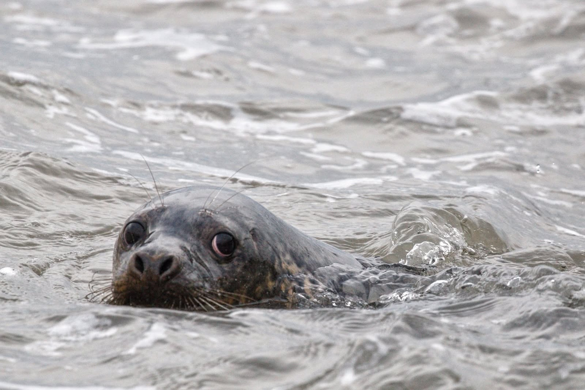
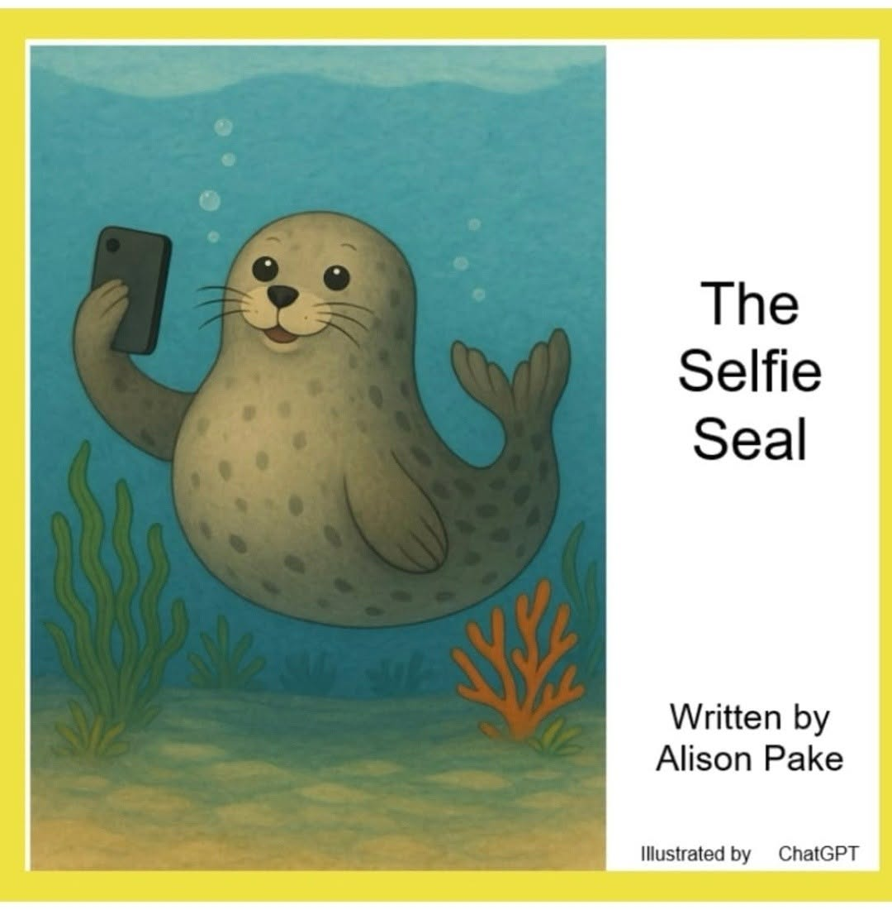

From our hospital to your feed
Good news.
Big personalities.
All things seals.
Catch up on hospital news, celebrate a return to the sea, and enjoy a little seal wisdom along the way.

What’s happening at the hospital?
Latest updates
Community news, fundraising and ways to make a difference for our seal patients.
The news we love to share
Back to the wild
A successful release is an update worth celebrating. Catch up with the seals taking their next steps beyond the hospital.

Our book corner · World Book Day 2026
A little seal.
A story to share.
Meet Spud, a cheeky seal pup with a big heart and a love of posing! Written by hospital volunteer Alison Pake, The Selfie Seal is a seaside adventure inspired by real rescue stories.
Ideal for ages 3–8, this illustrated story celebrates friendship and protecting our oceans. Bonus pages share seal facts, plastic pollution information and ways children can become ocean heroes.
View The Selfie Seal on Amazon ↗Whiskers, wisdom & a little silliness
The lighter side of seal life
Serious about their recovery. Not always serious about themselves.
Follow our journey
From our Facebook Page
Follow the latest news, seal stories and behind-the-scenes moments from the hospital.
Feed not showing? Read our posts on Facebook ↗
This feed is provided by Facebook and may use cookies or require a Facebook login.
Help make more good news
Be part of their next chapter
Support the care that gives rescued seals another chance in the wild.